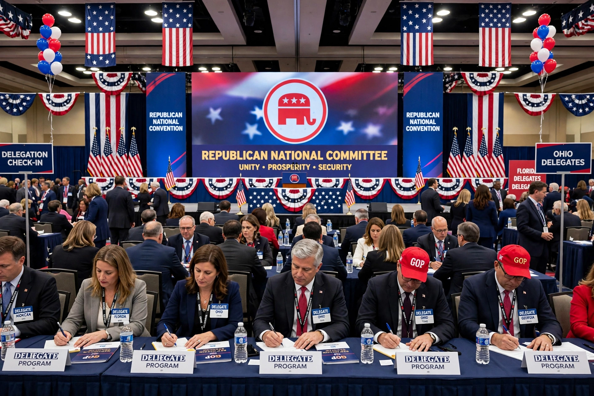

| Republican National Committee | |
|---|---|
| Founded | 1856 |
| Headquarters | 310 First Street SE, Washington, D.C. |
| Chairperson | Joe Gruters (from 2025) |
| Affiliation | Republican Party (United States) |
The Republican National Committee (RNC) is the primary committee of the United States Republican Party. It is responsible for developing and promoting the Republican brand and political platform, coordinating fundraising and election strategy, and organising the Republican National Convention every four years.
The RNC consists of 168 members: the state or territory party chair plus one committeeman and one committeewoman from each state and territory. The chairperson is elected by the committee and, when the party holds the presidency, is typically the president's choice — as when Donald Trump backed Michael Whatley as chair in 2024, followed by Joe Gruters in 2025.
Founded in 1856, the committee has managed the party's national conventions since the first one nominated John C. Frémont. Its Democratic counterpart is the Democratic National Committee.